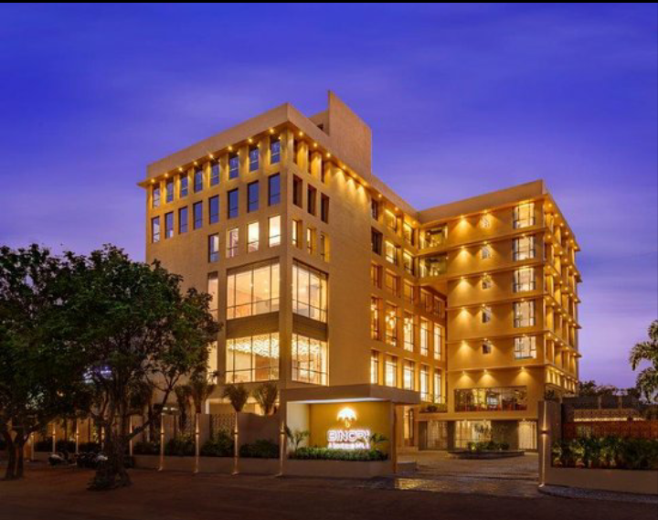

The elegant Rainbowpoint lodge
Residences are luxurious serviced apartments located within the Conrad Bangkok . These sophisticated apartments lie within the prestigious All Seasons Place near the city's premier shopping and commercial centers. Experience the freedom and privacy of beautifully furnished apartments combined with the luxurious amenities of the Conrad Bangkok hotel.
Located over seven stories our 112 Thai themed suites range from studio suites to one and two bedroom deluxe suites. All suites are tastefully furnished with luxurious silks, sedate dark woods, and combine elegance with the latest technology. Enjoy high-speed WiFi and wired internet access, PlayStation 3, HD Blu-Ray digital movies & games and cable TV. Experience home comforts far from home with a fully equipped kitchen.
Savor the finest Asian and international cuisine in the hotel's innovative restaurants. Enjoy authentic Japanese and Chinese delicacies and a variety of delicious French and Thai delights. Unwind after dinner in stylish bars and the vibrant Club 87 Plus nightclub.
Indulge in rejuvenating facials, body treatments and relaxing massages in one of Seasons Spa's 11 tranquil treatment rooms. Stay active in the outdoor pool, two floodlit tennis courts, fully equipped 24-hour Bodyworx gym and rooftop running track - all located on the seventh floor.
This Bangkok hotel boasts 22 versatile meeting rooms accommodating up to 1,200 people. From intimate dining with family and friends to elegant celebrations with hundreds of guests, the Conrad Bangkok Residences provides elegant meeting facilities and the latest technology to ensure a memorable and successful occasion